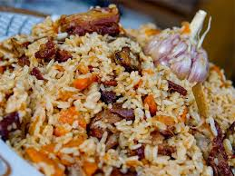

Main page
Plov recepi

This Beef Rice Pilaf is the best I’ve tried. I appreciate discovering recipes that are a hit with my whole family (it’s never awesome to be in the kitchen for hours and then be the only one eating what you made because you feel too guilty to toss your efforts into the waste receptacle (doesn’t that sound better than garbage can?).
Ingredients:
- 1 1/2 lbs Beef chuck, beef sirloin or good quality beef stew meat
- 1/3 cup canola oil, or extra light olive oil (not extra virgin)
- 2 medium onions, finely chopped
- 3 medium carrots, cut into matchsticks or grated
- 1 tsp salt for the meat and veggies + 1 1/2 tsp salt for the rice
- 1/2 tsp freshly ground black pepper
- 30g black ear mushrooms
- 1 tsp paprika
- 1 tsp cumin
- 3-4 bay leaves
- 1 3/4 cups hot water for braising meat
- 3 cups long grain rice (Basmati or Jasmin rice work great!)
- 4 cups hot water when cooking rice
- 1 head of garlic
- 1 tsp ground coriander
Steps
- Trim beef of excess fat and sinews (aka the chewy stuff), pat the meat dry with a paper towel and chop into 1/2″ to 3/4″ pieces.
- Preheat your dutch oven (or your large soup pot with a heavy bottom), to high heat. Once it’s hot, stir in your 1/3 cup canola oil. Once oil is hot, add chopped meat and saute uncovered 7 min over high heat until meat is browned, stirring every minute or so so it doesn’t scorch to the bottom of the pan.
- Reduce heat to medium and Add chopped onion, stirring often until onion is softened (5 minutes). Stir in sliced carrots, 1 tsp salt, 1/2 tsp pepper, 1 tsp paprika, 1 tsp cumin, 3-4 bay leaves and continue to cook over medium heat 5 minutes until carrots are softened.
- Add 1 3/4 cups hot water, cover & simmer over medium/low heat 45 min or until meat is tender.
- Meanwhile, rinse rice until water runs clear, then drain and set aside (this gets rid of the starch so you won’t end up with a sticky rice). Did I ever tell you I love my OXO strainer? This thing is so versatile (from sifting flour, rinsing and draining, to wearing it as a helmet and chasing your toddler around the house?
- Spread rice over the meat and add 4 cups hot water. Sprinkle the rice with 1 1/2 tsp salt (DO NOT STIR), bring to a boil then reduce heat to low and Let cook uncovered until most of the water is absorbed (10 min).
- Cut off the base of your whole garlic head to expose the cloves. Put your head of garlic, cut side down into the center of the rice and sprinkle the top of the rice with 1 tsp ground coriander
- Poke 7-10 holes through the rice to allow steam to escape to the surface, reduce the heat to low, then cover and cook an additional 15 minutes or until rice is cooked through. Remove the garlic head and bay leaves and stir everything gently to combine and you’re done.